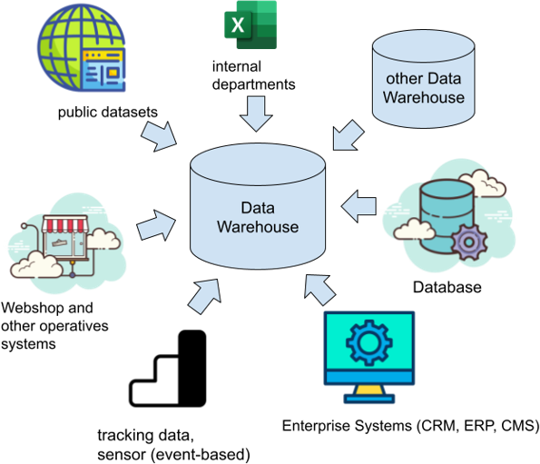
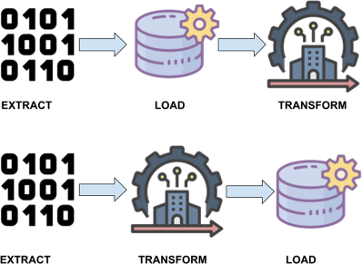
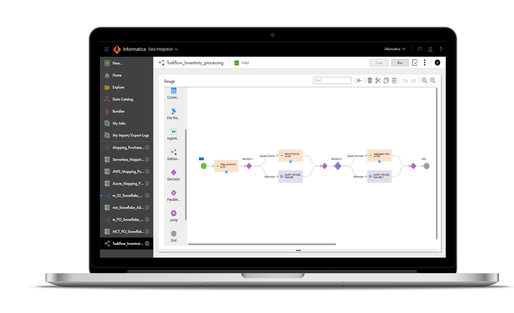

Business Intelligence
Technische Grundlagen
Quellen und Heterogenität der Daten
- Operative Systeme
- Web - Öffentliche und interne Quellen
- Dateien
- Lieferanten der Daten für das Data Warehouse
- Gehören nicht direkt zum DWH
- Können intern (Unternehmen) oder extern (z.B. staatl. Einrichtung) sein
- Heterogen bzgl. Struktur, Inhalt und Schnittstellen (Datenbanken, Dateien)
- Auswahl der Quellen und Qualität der Daten von besonderer Bedeutung
Herausforderung für Data Mart und Reporting Daten müssen Homogen transformiert und konsumiert werden in übergreifenden Strukturen
Klassifikationen Daten
Herkunft: intern, extern
Zeit: aktuell, historisch
Nutzungsebene: Primärdaten, Metadaten
Inhalt: Zahl, Zeichenkette, Grafik, Dokument
Darstellung: numerisch, alphanumerisch, BLOB
Sprache und Zeichensatz (Unicode, ASCII, UTF)
Vertraulichkeitsgrad
Einige dieser Klassifikationen wirken sich auf die Data Mart Struktur und das Report Design aus
Faktoren der Datenauswahl
- Qualität der Quelldaten
- Verfügbarkeit (rechtlich, sozial, technisch)
- Preis für Erwerb der Daten (speziell bei externen Quellen)
Datenauswahl einer Anbindung wird oftmals auf Reporting Anforderungen aufgebaut (Top-Down)
Art der Daten
- Snapshots: Quelle liefert immer kompletten Datenbestand
- Neuer Lieferantenkatalog, neue Preisliste
- Änderungen erkennen
- Historie korrekt abbilden
- Logs: Quelle liefert jede Änderung
- Transaktionslogs, Anwendungsgesteuertes Logging
- Änderungen effizient einspielen
- Netto-Logs: Quelle liefert Netto-Änderungen
- Katalogupdates, Snapshot-Deltas
- Keine vollständige Historie möglich
- Änderungen effizient einspielbar
Datenquellen

Formen des Datenaustauschs
- Dateien in verschiedenen Filesystemen (Lake Storage, SFTP, …)
- Automatisch exportiert (JSON, XML, parquet, csv)
- Manuell erstellt (Excel, csv, plain text)
- APIs
- Request body enthält Daten in Formaten (JSON, XML, plain text)
- Streaming
- Shared database (direkter Zugriff oder Replikation)
CSV Format
- Aufbau
- Ein zeichen zur Trennung von Spalten (, oder ; sind gängig)
- Feldbegrenzer ("")
- Formatierung
- Absprache bei Datentypen, da keine Metadaten vorhanden sind (Datumsformate, führende Nullen, ...)
- Kein Hinweis auf Zeichensatz
Stunde,Montag,Dienstag,Mittwoch,Donnerstag,Freitag
1,Mathematik,Deutsch,Englisch,Erdkunde,Politik
2,Sport,Deutsch,Englisch,Sport,Geschichte
3,Sport,"Religion (ev., kath.)",Kunst,,Kunst
JSON Format
- Aufbau
- Attribute und Wert Paare auch als Array (Liste)
- Formatierung
- UTF-8
{
"firstName": "John",
"lastName": "Smith",
"isAlive": true,
"age": 27,
"address": {
"streetAddress": "21 2nd Street",
"city": "New York",
"state": "NY",
"postalCode": "10021-3100"
},
"phoneNumbers": [
{
"type": "home",
"number": "212 555-1234"
},
{
"type": "office",
"number": "646 555-4567"
}
]
}
XML Format
- Aufbau
- Mit tags wird die Struktur von Informationen dargestellt "<>"
- Möglichkeit zur Übermittlung von Metadaten
- Formatierung
- Verschiedene Encodings, kann im XML angegeben werden
Wikipedia Städteverzeichnis
Genf
Genf ist der Sitz von ...
Köln
Köln ist eine Stadt, die ...
parquet Format
- Aufbau
- Spaltenorientiertes Datei-Format
- Es muss nicht zeilenbasiert gelesen werden, performante Verarbeitung in modernen Datenbanken
- Formatierung
- Kompression und Encoding der einzelnen Spalten unterscheidet sich
- Abhängigkeit von Datentyp (Integer, String)
Erwartung und Realität von Anbindungen

Aufbereitungsschritte der Daten bis zum Report
- Primärschlüssel definieren und festlegen
- Historisierung der Daten
- Vereinheitlichung der Datentypen und Attributenamen
- Gewährleistung der Datenqualität durch Transformationen
- Deduplizierung
Schritte werden abhängig von DWH Architektur und Datenmodellierung in anderen DWH-Layern durchgeführt (Data Vault, Persistent Staging Area)
Referenzarchitektur

Fragestellungen bei Anbindungen
- In welcher Schicht im DWH werden Daten bereinigt und gefiltert?
- Wann wird die Datenqualität geprüft?
- Muss Datenqualität über den gesamten Lade-Prozess des DWHs geprüft werden?
- Müssen Business Rules und Transformationen schon vor dem Laden angewendet werden?
Einfluss auf diese Fragen haben die Datenschutzrechtliche Einordung der Daten, die Integrität, erlaubte Fehlertoleranz, die Genauigkeit der Daten, Kosten und die Performance.
Push vs. Pull
- PULL
- Zum festgelegten Zeitpunkt als batch werden Daten aus der Quelle abgerufen
- Re-run jederzeit möglich
- Kein Realtime
- PUSH
- Nahe oder im Quellsystem integrierte Komponente, die Daten aufgrund eines Events überträgt
- Zielsystem muss durchgängig verfügbar sein
ETL vs. ELT
- ELT entstand aus Big Data und cloud-Ansätzen
- Höhere Rechenkapazitäten und Parallelisierungstechniken ermöglichen es Rohdaten erst zu laden und im Zielsystem zu transformieren
- ETL klassischer DWH Ansatz
- Bevor Daten ins DWH geladen werden finden schon Transformationen statt

Warum ELT und ETL tools sinnvoll sind
- Darstellung visuelle Datenfluss (Lineage)
- GUIs und Editoren mit Einblick auf Datenbank, Bessere Benutzererfahrung
- Datenerfassung, -transformation und -konsolidierung automatisieren
- Komponenten oder Funktionalitäten zur Datenbereinigung und Auditing
- Wiederverwendbarkeit von Logiken in templates

Herausforderungen der ETL/ELT Prozesse
- Starke Heterogenität der Quellsysteme und Daten
- Verschiedene Arten der Anbindung und Formate
- Heterogene Daten zu einem konsistenten Data Mart zusammensetzen
- Lade- und Aktualisierungszeitpunkte synchronisieren (Welche Daten müssen zu welchem Zeitpunkt im Report vorliegen)
Modernes Data Warehouse auch als Quelle

Literatur
- Esteban Zimányi; Alejandro Vaisman, Data Warehouse Systems : Design and Implementation, Springer Berlin Heidelberg, 2022
- Peter Gluchowski, Frank Leisten, Gero Presser (Hrsg.), Architekturen für BI & Analytics, dpunkt.verlag, 2021
- Matt Housley, Joe Reis, Fundamentals of Data Engineering: Plan and Build Robust Data Systems, O'Reilly Media, 2022
- Dani Schnider, Claus Jordan, Peter Welker, Joachim Wehner, Data Warehouse Blueprints: Business Intelligence in der Praxis, Carl Hanser Verlag GmbH & Co. KG; 1. Edition, 2016)
- Veith Köppen, Kai-Uwe Sattler, Gunter Saake, Data Warehouse Technologien, mitp Verlags GmbH & Co. KG; 2., überarbeitete Auflage 2014